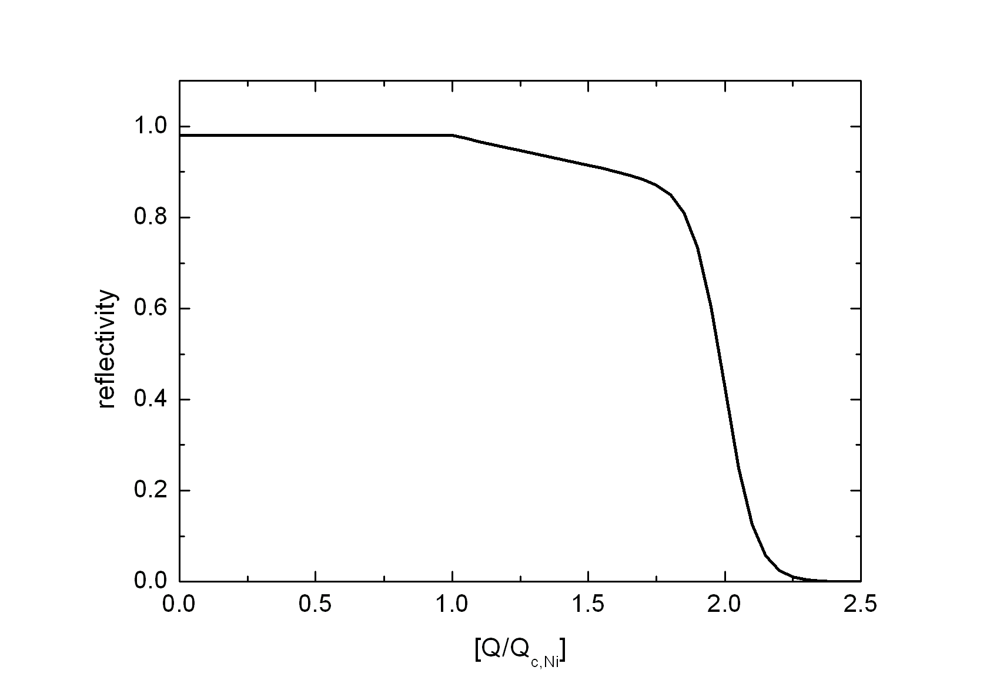

| Parameter Unit |
Description | typical values |
| R0 | reflectivity for 0 <= Q <=Qc | 0.99 |
| m | factor of supermirror | 1 ... 4 |
| Qc [Ang-1] | crit. momentum transfer | 0.02174 |
| Rm | reflectivity for Q = m Qc(Ni) | 0.6 .... 0.92 |
| W [Ang-1] | width of the cut-off tange W=0 causes a sharp cut-off |
0 ... 0.004 |
| mirror file | name of the file into which the reflectivity curve is written | - |
